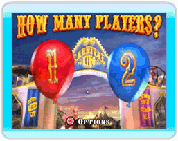
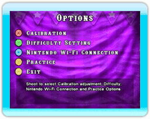

JUGADORES
Apunta el Wii Remote a uno de los globos y presiona o para disparar: 1 Jugador (Rojo) o 2 Jugadores (Azul). Jugadores distintos pueden turnarse con dos Wii Remotes, pero no los pueden utilizar al mismo tiempo.

OPCIONES
Calibración
Selecciona ingresar a la zona de Calibración para recalibrar el Wii Remote.
Ajuste del grado de dificultad
Selecciona para cambiar el grado de dificultad: Fácil para principiantes o jóvenes, Normal para jugadores usuales y Tirador experto para los jugadores más experimentados, listos para enfrentar el desafío final. El valor predeterminado es Normal.
Conexión Wi-Fi de Nintendo
Selecciona para Encender o Apagar esta función. El valor predeterminado es Apagado. Encender la Conexión Wi-Fi de Nintendo te permite transferir la puntuación a los marcadores CWF de Nintendo.
Modo de práctica
Selecciona para Encender o Apagar esta función. El valor predeterminado es Apagar. En el modo de juego competitivo estándar, se juega una vez solamente antes de transferir la puntuación al marcador. En el Modo de práctica, puedes practicar cada juego repetidamente para perfeccionar tus habilidades como tirador. En este modo, la puntuación no se transfiere al marcador, pero sí aparece en la pantalla de elección de juegos, junto con la opción Jugar otra vez.
Salir
Regresa a la pantalla Jugadores y opciones.